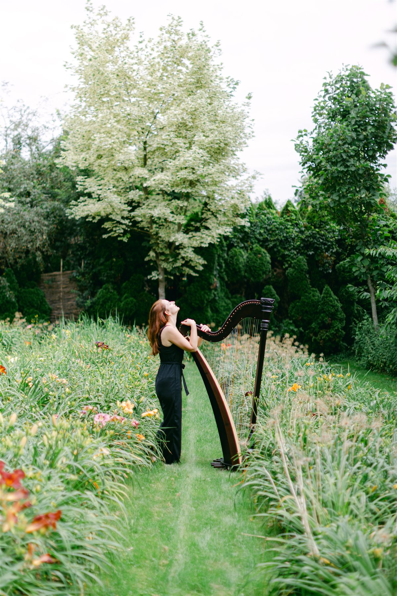

Wo Worte enden, beginnt die Musik
Jeder Moment trägt seine ganz eigene Melodie. Ich begleite deine besonderen Augenblicke mit Klängen, die berühren, den Raum öffnen und im Gedächtnis bleiben. Entdecke, wie wir deinen Anlass musikalisch zum Leben erwecken können:
Kleine Hochzeiten unter freiem Himmel, Vernissagen und private Feiern im engsten Kreis – Musik für die großen Gefühle im kleinen Rahmen.
Fließende Klänge für Yoga- und Qi-Gong-Stunden, Massagen sowie Klangreisen und geführte Meditationen.
Individuell komponierte Musikstücke als bleibendes Geschenk – auch für Filme, Dokumentationen und Medienprojekte.
Feinfühlige, dezente Live-Musik für Restaurants, Cafés und Hotels – eine warme Wohlfühlatmosphäre im Hintergrund.
Einfühlsame Begleitung für Menschen mit besonderen Bedürfnissen sowie in Pflege- und Betreuungseinrichtungen.
Privater Unterricht und Workshops für Fingertechnik, Improvisation und freies Spiel – in deinem eigenen Tempo.
Meine Musik lebt von der Nähe, der Ruhe und der ganz persönlichen Begegnung. Daher begleite ich am liebsten Veranstaltungen im kleinen, feinen Rahmen.
Um dieser Intimität treu zu bleiben, begleite ich keine großen Hochzeiten oder Großveranstaltungen. Auch das Einstudieren komplett neuer, abweichender Wunschlieder (einzelne Herzenswünsche sprechen wir natürlich gerne ab) sowie die klassische Prüfungsvorbereitung für Musikschulen oder Konservatorien gehören nicht zu meinem Weg.
Mein Herz schlägt für die leisen, tiefen Momente im kleinen Kreis – und genau für diese bin ich von ganzem Herzen für dich da.
Ich bin in Österreich zu Hause und begleite dich gerne überall dort, wo feine Klänge gebraucht werden. Für besondere Herzensprojekte zieht es mich nach Absprache und persönlicher Anfrage auch gerne über die Grenzen hinaus – sprich mich einfach an, und wir schauen gemeinsam, ob der Weg uns zusammenführt.
Ich spüre mich in dich hinein und komponiere ein individuelles Musikstück, das nur für dich entsteht — zum Zuhören, Liegen und Nachspüren, mit der Möglichkeit eines anschließenden Gesprächs.
Mehr erfahren
Schreib mir gerne unverbindlich, ich melde mich persönlich zurück.
Jetzt anfragen